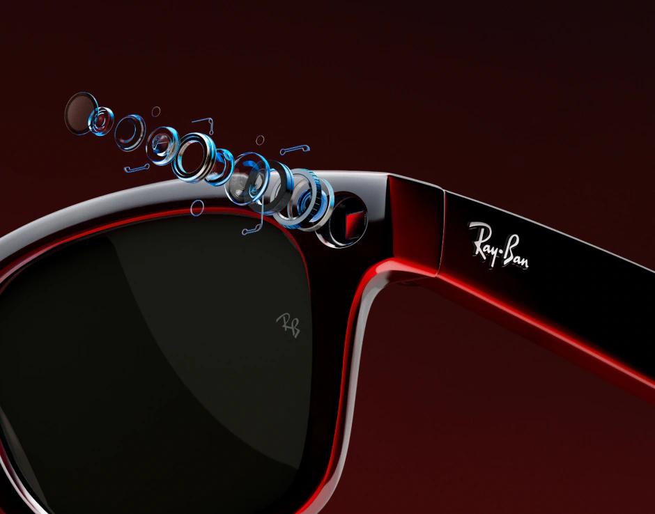
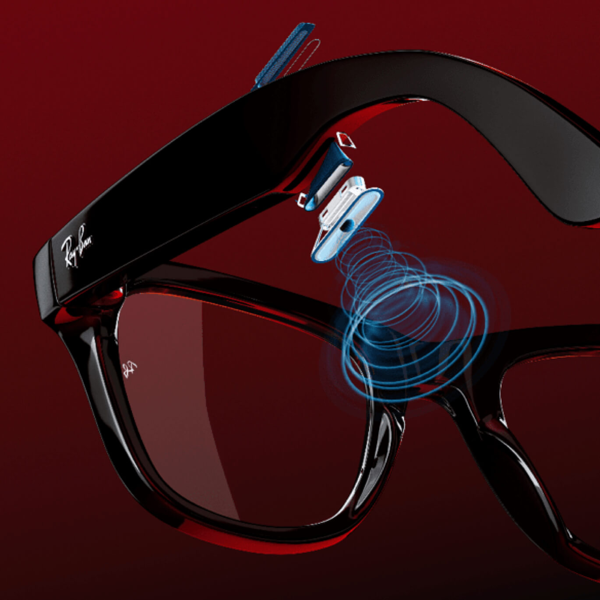

Los lentes inteligentes combinan diseño moderno con tecnología avanzada para ofrecer una experiencia diferente al usar gafas. Modelos como los Ray-Ban Meta Smart Glasses, desarrollados por Meta Platforms y Ray-Ban, permiten capturar momentos, escuchar audio y utilizar funciones de inteligencia artificial directamente desde los lentes. Gracias a su diseño discreto y ligero, integran tecnología sin perder el estilo característico de los lentes tradicionales.


Permite tomar fotografías y grabar video desde la perspectiva del usuario.
Permite tomar fotografías y grabar video desde la perspectiva del usuario.
Integran varios micrófonos que captan la voz con claridad para llamadas o comandos de voz.
Integran varios micrófonos que captan la voz con claridad para llamadas o comandos de voz.
Se conectan al teléfono para compartir contenido, reproducir audio o gestionar funciones desde una aplicación.
Los lentes con inteligencia artificial representan una nueva forma de interactuar con la tecnología en la vida cotidiana. A diferencia de los lentes tradicionales, estos dispositivos integran funciones avanzadas que permiten capturar momentos, escuchar contenido multimedia y acceder a diferentes herramientas digitales de manera práctica y discreta.
Modelos como los Ray-Ban Meta Smart Glasses, desarrollados en colaboración entre Ray-Ban y Meta Platforms, combinan el estilo característico de la marca con innovaciones tecnológicas que facilitan la comunicación y el acceso a información. Gracias a sus cámaras, micrófonos y bocinas integradas, estos lentes permiten realizar múltiples funciones sin necesidad de utilizar constantemente el teléfono móvil.